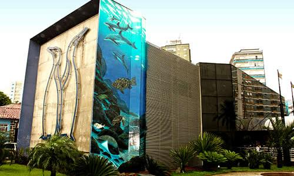

Aquário Municipal
É o Aquário mais antigo do Brasil. Foi a primeira instituição brasileira a realizar resgate de animais marinhos.
Museu do Café
O Museu foi criado em 1998 com o objetivo de preservar e divulgar a histórica relação entre o café e o país.
Jardim Botânico
Espaço verde com 90 mil m², conta com acervo vivo de mais de 300 espécies vegetais catalogadas.
Museu do Pelé
Instalado nos antigos Casarões do Valongo, o museu apresenta a incrível trajetória de Edson Arantes do Nascimento, o Rei do Futebol.
Orquidário
Inaugurado em 1945 , era, à época, o maior parque do gênero, ao ar livre, do mundo. Atualmente, o Orquidário conta com cerca de 3.500 orquídeas.